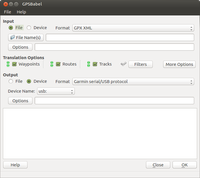

GPSBabel
Dieser Artikel wurde für die folgenden Ubuntu-Versionen getestet:
Ubuntu 16.04 Xenial Xerus
Ubuntu 14.04 Trusty Tahr
Zum Verständnis dieses Artikels sind folgende Seiten hilfreich:
 In der Regel erzeugen die GPS-Geräte verschiedener Hersteller GPS-Daten (Tracks, Routen und Wegpunkte) in proprietären Formaten, wobei es herstellerbedingt eine sehr große Vielfalt von Datenformaten gibt. Wie der Name bereits andeutet, dient GPSBabel
In der Regel erzeugen die GPS-Geräte verschiedener Hersteller GPS-Daten (Tracks, Routen und Wegpunkte) in proprietären Formaten, wobei es herstellerbedingt eine sehr große Vielfalt von Datenformaten gibt. Wie der Name bereits andeutet, dient GPSBabel  der Konvertierung von einem GPS-Format in ein anderes.
der Konvertierung von einem GPS-Format in ein anderes.
Dabei unterstützt GPSBabel mittlerweile nicht nur mehrere Dutzend Text- und Binärformate , sondern auch Protokolle zum direkten Lesen und Schreiben des angeschlossenen GPS-Geräts. Die Software steht unter der GPL und kann kostenfrei genutzt werden, allerdings ist sie unter Linux bislang nur als Kommandozeilentool verfügbar.
Als grafische Oberfläche kann Gebabbel oder gpsbabel-gui verwendet werden.
Installation¶
GPSBabel ist in den Paketquellen von Ubuntu enthalten. Es muss das Paket
gpsbabel (universe)
 mit apturl
mit apturl
Paketliste zum Kopieren:
sudo apt-get install gpsbabel
sudo aptitude install gpsbabel
installiert [1] werden.
Um die grafische Oberfläche gpsbabel-gui  zu installieren muss das Paket
gpsbabel-gui (universe)
mit apturl
Paketliste zum Kopieren:
sudo apt-get install gpsbabel-gui
sudo aptitude install gpsbabel-gui
installiert [1] werden.
Die unten angegeben Hinweise gelten analog und können in der Oberfläche direkt eingegeben werden.
Benutzung¶
Die allgemeine Syntax für den Aufruf [2] von GPSBabel zur Konvertierung in das von OpenStreetMap verwendete GPX-Format lautet:
gpsbabel -i [Format Eingangsdatei] -f [Name Eingangsdatei] -o gpx -F [Name Ausgabedatei]
Sie gibt die folgende Struktur vor:
| Syntax | |
| Parameter | Beschreibung |
-i | Eingangsformat (z.B. garmin, tomtom, mtk und m241) |
-f | Eingangsdatei (Schnittstellen: usb:, /dev/ttyUSB0 und com1:) |
-o | Ausgangsformat |
-F | Ausgangsdatei |
| weitere Parameter | Beschreibung |
-r | Routen |
-t | Tracks |
-w | Wegpunkte |
Die Konvertierung sowie das Lesen und Schreiben vom bzw. auf das Gerät kann in beide Richtungen erfolgen. Die Kürzel für das Format der Eingangsdatei finden sich auf gpsbabel.org , weitere Infos zu GPSBabel liefert die Online-Dokumentation .
Beispiele¶
Einige Anwendungsbeispiele von GPSBabel:
| Anwendungsbeispiele | |
| Befehl | Beschreibung |
| gpsbabel -D9 -w -i garmin -f usb: -o gpx -F WP.gpx | Wegpunkte von einem Garmin-Gerät auf den PC übertragen und als WP.gpx abspeichern. |
| gpsbabel -D9 -t -i garmin -f usb: -o gpx -F TP.gpx | Tracks eines Garmins auf den PC übertragen und als TP.gpx abspeichern. |
| gpsbabel -t -i gpx -f NAME.gpx -o garmin -F usb: | Den Track NAME.gpx an das Garmin-Gerät senden. |
| gpsbabel -t -i garmin -f usb: -o kml,points=0,line_color=ff0000ff -F Track.kml | Tracks vom Garmin-Gerät importieren und nach KML umwandeln zur Verwendung in Google Earth. |
| gpsbabel -w -i tomtom -f "NAME.ov2" -o gpx -F "NAME.gpx" | Umwandlung von TomTom POIs nach GPX XML |
| gpsbabel -w -i tomtom -f "NAME.ov2" -o garmin_gpi -F "NAME.gpi | Umwandeln von TomTom POIs in Garmin POIs |
| gpsbabel -i gpx -f NAME.gpx -o unicsv -F NAME.csv | Eine GPX Datei in eine Komma-getrennte-Datenfelder-Datei (csv) umwandeln. Die Spaltennamen stehen in der ersten Zeile (unicsv). Diese Datei lässt sich leicht in einem Editor oder Tabellenkalkulations-Anwendung bearbeiten und mit dem folgenden Befehl in eine GPX-Datei zurückwandeln. |
| gpsbabel -i unicsv -f NAME.csv -x transform,trk=wpt,del -o gpx -F NAME.gpx | Eine CSV-Datei mit den Spaltennamen in der ersten Zeile in eine GPX-Datei umwandeln. Dabei werden Wegpunkte zu Trackpunkten umgewandelt. |
| gpsbabel -i garmin_fit -f NAME.fit -o gpx -F NAME.gpx | Eine FIT-Datei (zum Beispiel von einem Garmin Edge 800) in eine GPX-Datei umwandeln. Funktioniert nur mit Version 1.4.4 und nicht mit Version 1.4.3, welche in den Ubuntu Paketquellen enthalten ist. |
In den Artikeln zu Garmin eTrex Legend / Vista HCx, Holux m241 sind spezielle Anwendungsbeispiele zu diesen Geräten zu ersehen.
Integration¶
Mittels Skripten können die Befehle in Dateimanagern verwendet werden.
Nautilus¶
Eine einfache und schnelle Art der Konvertierung und Datenübertragung mit dem Dateimanager kann durch die Erweiterung Nautilus-Actions erreicht werden.
Skripte findet man unter:

Online-Version¶
Alternativ zur lokalen Installation kann auch das Online-Gateway  für GPSBabel auf der Webseite GPS-Visualizer zur Konvertierung der GPS-Daten genutzt werden. Vorteil ist, dass hier weder eine Softwareinstallation, noch die umständliche Eingabe von Kommandozeilenparametern erforderlich ist. Allerdings kann die Seite nicht benutzt werden, um mit dem GPS-Empfänger zu kommunizieren; und einige erweiterte Optionen von GPSBabel (Filter und spezifische XCSV-Formate) sind ebenfalls nicht verfügbar.
für GPSBabel auf der Webseite GPS-Visualizer zur Konvertierung der GPS-Daten genutzt werden. Vorteil ist, dass hier weder eine Softwareinstallation, noch die umständliche Eingabe von Kommandozeilenparametern erforderlich ist. Allerdings kann die Seite nicht benutzt werden, um mit dem GPS-Empfänger zu kommunizieren; und einige erweiterte Optionen von GPSBabel (Filter und spezifische XCSV-Formate) sind ebenfalls nicht verfügbar.
- Erstellt mit Inyoka
-
 2004 – 2017 ubuntuusers.de • Einige Rechte vorbehalten
2004 – 2017 ubuntuusers.de • Einige Rechte vorbehalten
Lizenz • Kontakt • Datenschutz • Impressum • Serverstatus -
Serverhousing gespendet von